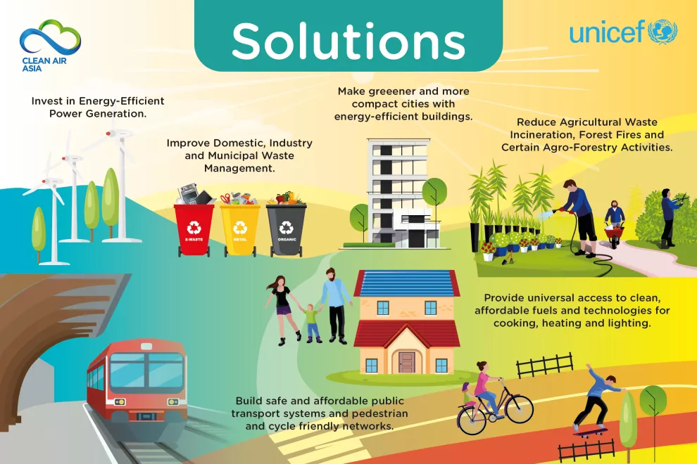

Solutions for a Cleaner World
What can be done to prevent or reduce the pollution happening in the world?
Reducing Air Pollution
Here are some effective solutions that communities can implement:
- Promote walking and cycling as healthy, zero-emission modes of transportation.
- Incentivize the use of cleaner fuel options such as electric or hybrid vehicles.
- Encourage the adoption of clean energy sources like solar and wind power.
- Regulate open burning and provide green alternatives like composting services.
- Increase urban green spaces by planting trees and shrubs to act as natural air purifiers.
- Foster community involvement in local environmental initiatives and clean-up events.
